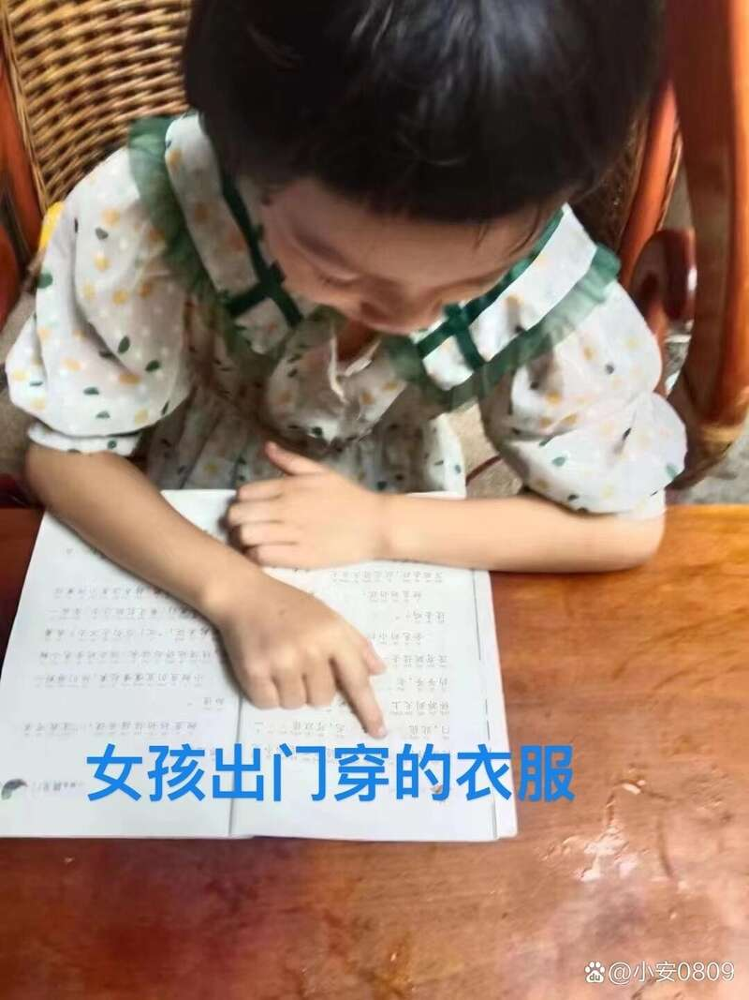

“弟弟找到了，但（不代表）姐姐也是一样的结果。”8月6日，成都失联姐弟的表哥吴先生告诉九派新闻，姐弟俩中的弟弟已经不幸遇难，家属现在正在努力寻找姐姐。
7月17日，姐弟二人在四川省成都市新都区泗义村3组海韵毗河湾附近走失，家人苦寻至今。
8月3日，在河道下游50公里左右，发现了弟弟的遗体。吴先生称，经DNA检测，已确认弟弟不幸遇难。
【1】希望姐姐平安找到
失联的姐弟俩，姐姐叫卿嫣然，今年7岁，弟弟3岁。吴先生称，他们都是本地人，村子是一个城中村，姐弟俩从小在村里长大，左邻右舍的，大家都很熟悉，两孩子也经常在村子里玩耍。
7月17日上午，爷爷在家，姐姐骑着自行车和弟弟在外面玩。9时左右，姐姐推着自行车回来，说要再出去玩一会儿，约1小时。爷爷陪着姐姐一起走出家门，在巷口看着姐姐往外走，说弟弟在外面等她一起玩。爷爷记得很清楚，姐姐当时是往河的反方向走。
大约20分钟后，爷爷出去找孩子，没有找到，后来越来越多的人加入寻找的队伍，始终没有发现有价值的线索。他们担心孩子的安危，报了警，警方一同寻找，但也没什么结果。
吴先生介绍，姐姐卿嫣然是一个性格很好的女孩，从来不和家里人置气，就算家里人今天责骂了她，第二天也就好了。事发前，俩孩子都没有和家里人闹矛盾。
吴先生还表示，姐弟俩的长辈都是实在人，没有与人结仇。“我们也往这方面想过，排查过，零星一两个有过口角，但都是很小的事情，隔天就和好了那种。”
为了找到两个孩子，这些天参与搜救的人员排查了两姐弟走失地点附近两三公里以内的区域，包括所有流动人口、小孩可能会去的地方、可能会藏人的地方。但一直没有发现较为有价值的线索。
直到前几天，在下游50公里左右的地方，发现了疑似弟弟的遗体。8月5日，经DNA检测，确认那是弟弟。
吴先生表示，虽然家属十分悲痛，但这并不意味着姐姐也出事，他们正在努力寻找姐姐，希望大家能提供有价值的线索，把姐姐平安找回来。
姐姐身高1.1米到1.3米，身形较瘦，短发，失联那天穿白色裙子，上面有很多彩色小花。

姐姐卿嫣然失联当天穿的衣服。图源受访者账号
【2】弟弟已不幸遇难
对于表弟离世，吴先生感到十分痛心。目前孩子的死因初步判断是溺亡，但家属有很多不解的地方。
吴先生对九派新闻表示，在孩子走失的第一天，他们也怀疑过孩子会不会落水。从家往外走，有两条路通往河边，路上有人看着，他们询问过很多次，均没有人看到孩子往河边去。
其还表示，那条河有约20米的河道可以靠近，其余地方都有遮挡，小朋友难以过不去。他们也细细找过这20米河道，没有发现脚印或划痕。岸边长了水草，他们也把水草拨开看过，没有被扯坏或者压坏的痕迹。“水草是很嫩的，可能轻轻一掐就断掉了。”
所以他们不解，孩子如何掉到水里，更为不解的是，孩子如何漂到50公里左右的地方。
吴先生说村子里流过的河是内河，流速很慢，水也不是特别深。即便说孩子失联几天后，受汛期影响，河面涨水了，但也只涨了一米多，流速也没有快到很夸张。
“而且沿河下去，弯弯绕绕七八十公里这样子，沿途有很多沸腾线和大坝。”在重重阻拦下，孩子的遗体到底如何漂这么远？
发现孩子的遗体后，他们也了解过这片水域溺水的情况，此前也有人落水溺亡，但都在不远处就被发现。他还了解到，在夏天，人溺亡后3天左右就会浮起来。“按照这个时间推算，孩子浮起来时汛期还没到，我们天天在河边找，不只是我们，还有帮忙的人，我们也和附近钓鱼的人说，如果发现什么浮起来了，和我们说一下。所以如果浮起来，我们应该早就发现了。”
现在，这些疑惑无人解答。
吴先生说，现在孩子父母的精神都不太好，他们只希望赶紧平安找到姐姐，以及解答心中疑惑。